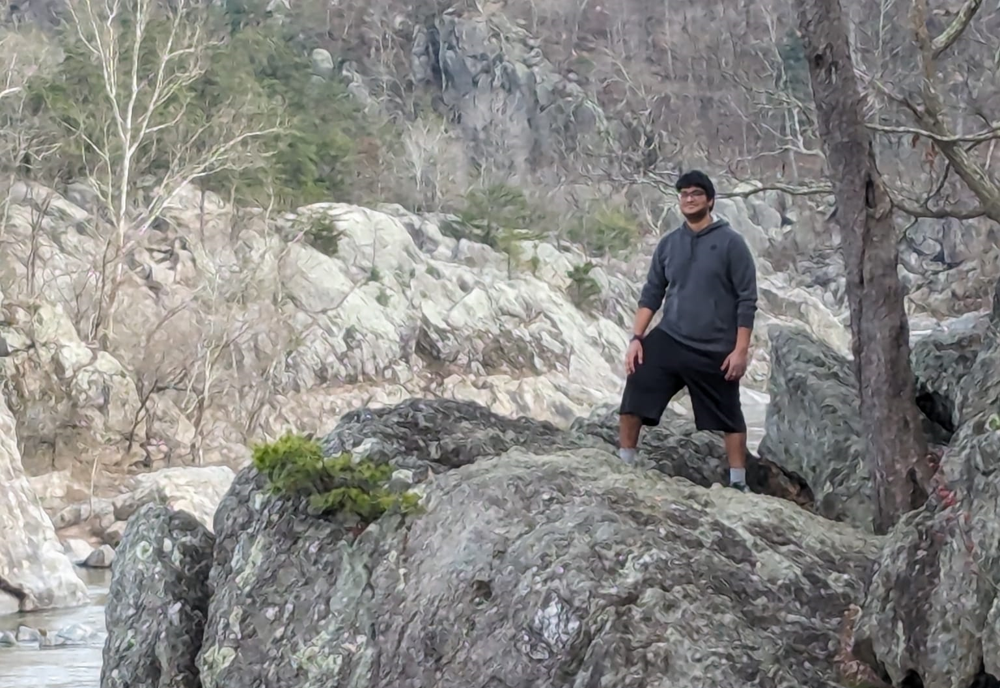
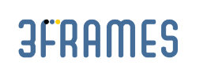
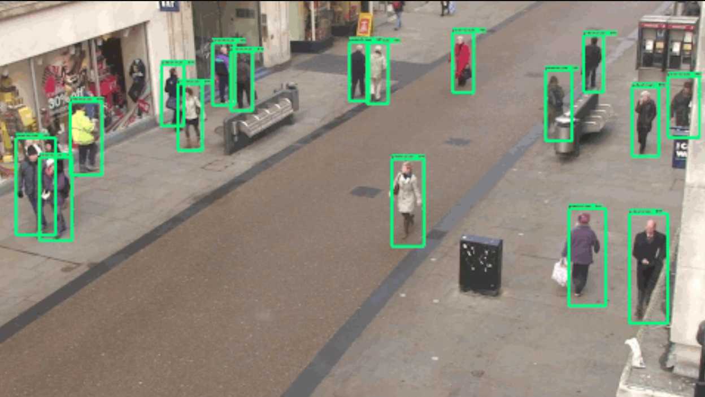
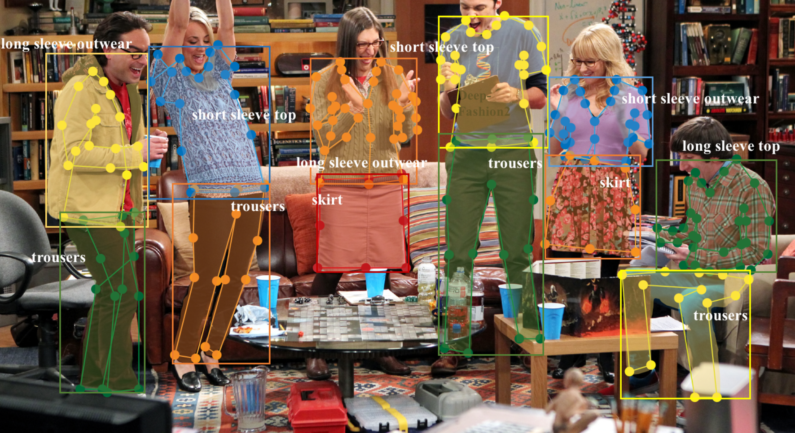
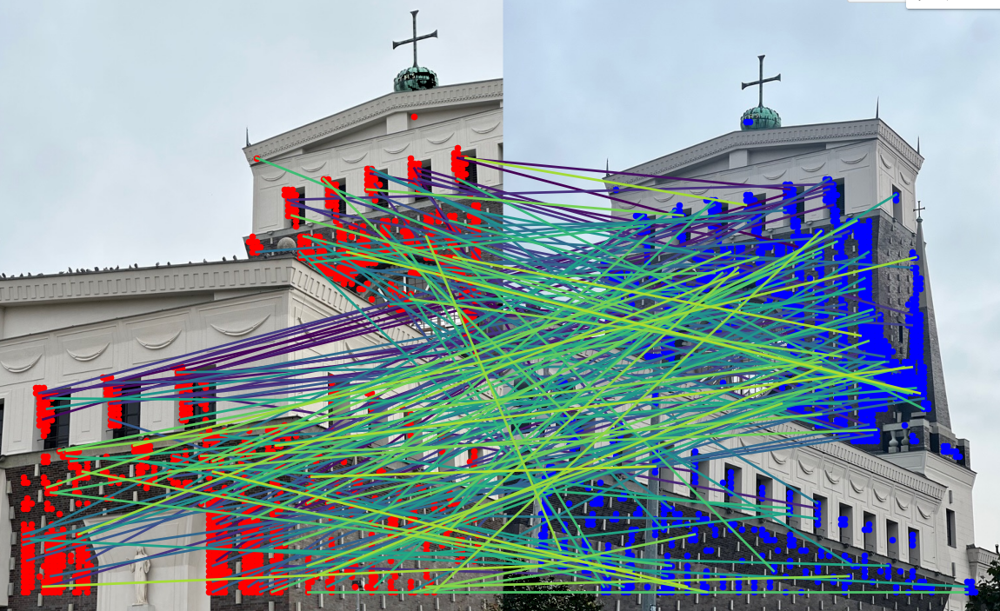
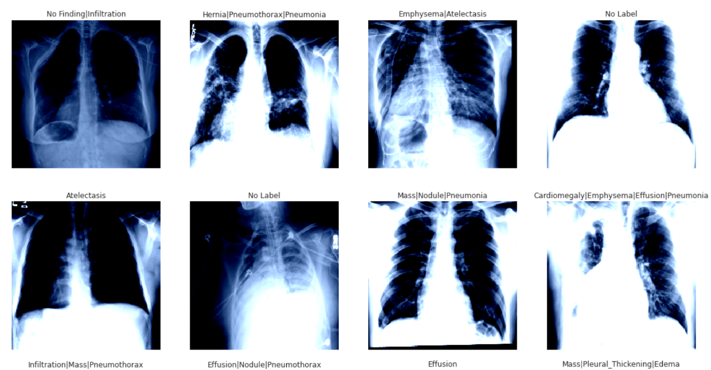
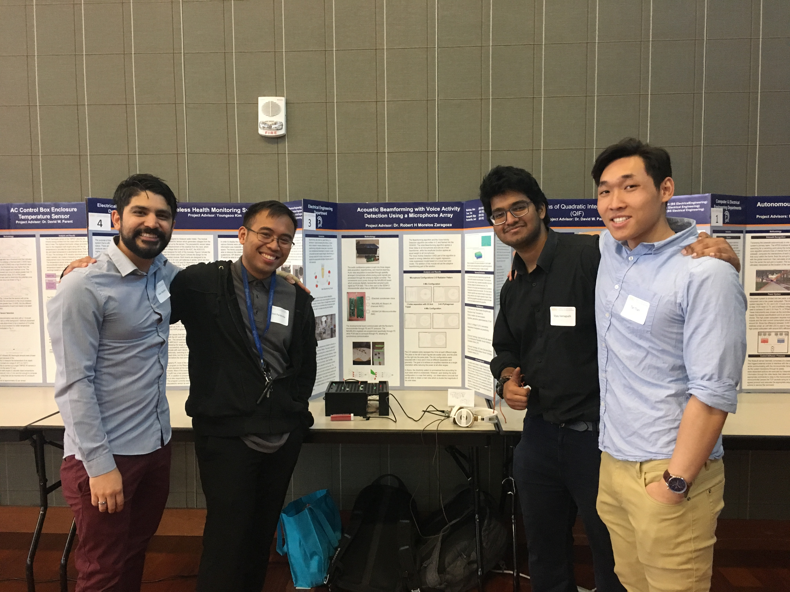
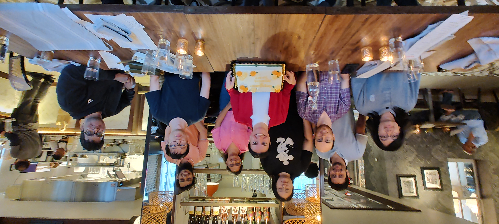
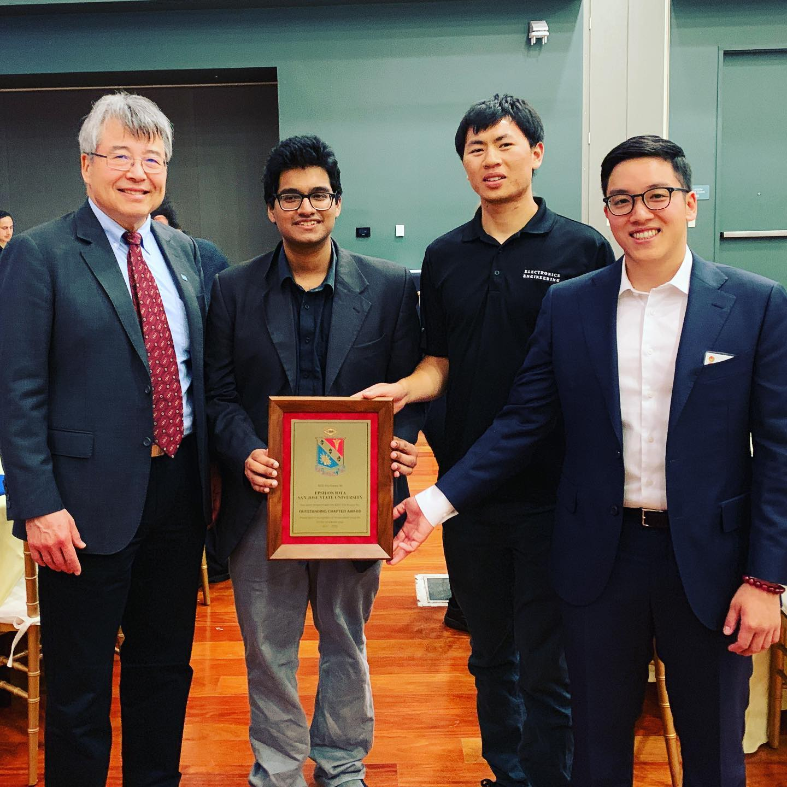

Intro

Hello! I am Vijay Vanapalli, a dedicated computer science professional with a passion for developing innovative solutions.
Currently, I am pursuing my Master's degree in Computer Science at The George Washington University and working as a Graduate Research Assistant.
Previously, I worked as a Computer Vision Engineer at 3Frames Software Labs.
Work Experience
George Washington University
Graduate Research Assistant (February 2024 - Present)
- Collected data for 50 objects across 10 categories, 10 sessions, totaling 500 videos using Color DVS346 Camera.
- Applied Spiking Neural Networks for Continual Learning on Event Camera Dataset

3Frames Software Labs
Computer Vision Engineer (April 2020 - April 2023)
- Processed and managed data from multiple CCTV streams in real-time, improving monitoring efficiency.
- Configured Server-Client data interpretation using Apache ActiveMQ, gRPC, and Plotly.py
Software Intern (April 2020 - April 2023)
- Implemented Snowboy Hotword Detection on a Raspberry Pi for Android app recognition
- Deployed NLP offline on Android Applications using OpenNLP, improving app responsiveness.
- Conducted unit testing on modules within a framework and server integration
San Jose State University
Instructional Student Assistant (May 2016 - May 2018, San Jose, CA, USA)
- Led instruction in EE 30 course, focusing on programming microcontrollers and hardware-software integration.
- Designed course modules for beginners in C++ and utilized MSP430 for keystone projects.
Projects

iSentinel
- Trained Anomaly detection models, extracting I3D features over frames from multiple video streams.
- Extended UI accessibility and compatibility by translating to Plotly.js.
- Implemented MediaPipe Face Detection to classify emotions and behaviors.
- Utilized gRPC and ActiveMQ for server-client data interpretation.
- Integrated Raspberry Pi for image collection and preprocessing.

Garment Landmark Identification with DeepFashion2
- Implemented Transfer Learning to identify key landmark positions for 5 different garment classes.
- Procured and formatted a proprietary dataset in DeepFashion2 format.

Image Matching and 3D Reconstruction
- Focused on creating 3D maps from image collections, evaluating models based on mean Average Accuracy (mAA) for camera center positioning.
- Experimented with various embedding techniques, including ResNet50 and Hugging Face’s Transformers.
- Utilized traditional keypoint detection methods (SIFT, ORB, AKAZE) and modern techniques (ALIKED, SuperPoint) for feature extraction.
- Implemented COLMAP for 3D reconstruction and addressed challenges with keypoint matching and image reconstruction.

Deep Learning for Chest X-Ray Medical Diagnosis of Lung Cancer
- Utilized the NIH Clinical Center dataset with 100,000 annotated images, addressing class imbalance.
- Compared DenseNet-121, VGG16, ResNet50, and Vision Transformer for multi-label classification.
- Employed image preprocessing techniques and implemented a custom ChestXRayDataset class.
- Evaluated models based on AUC, precision, recall, and F1-score to identify the most effective architecture.

OCR Projects
- Deployed EasyOCR for tabulating PDFs into structured data.
- Designed a module using Character-Region Awareness for Text detection (CRAFT).
- Implemented a custom license plate detector using YOLOv7.

Acoustic Beamforming with Voice Activity Detection Using a Microphone Array
- Engineered data acquisition processes established interfacing between the NAU85L40 and NuTiny.
- Integrated a VAD module with the Delay Sum Algorithm to steer the beamformer.
- Created an LED interface to map beam steering capability in real-time.
About
Education
The George Washington University, School of Engineering & Applied Science - Master of Science in Computer Science (Expected December 2025)
San Jose State University - Bachelor of Science in Electrical Engineering (December 2018)
Technical Skills
- Languages: C/C++, Python, Rust, Java
- Libraries: TensorFlow, PyTorch, OpenCV, NumPy, Scikit-learn, MediaPipe
- Developer Tools: VSCode, Git, IntelliJ, Eclipse
Research Interests

Working on creating a dataset with a Color DAVIS346 camera, working on Neuromorphic Vision for Continual Learning under Professor Gina Adam ADAM Lab.
IEEE-HKN Involvement - 2019

President - Arranged workshops and mock interviews with various companies at SJSU
Contact